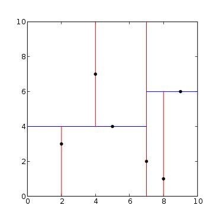

Coding Projects

K-D Trees
C++
I implemented a KD-Tree which implements a nearest neighbor search with k-Dimensional points. Utilizing the tree, the program produces a photomosaic with hyperrectangles.

UIUC Bus Application
Parse, Javascript, Java
This project incorporates a Web, iOS, and Android application. These applications are all interconnected and offer push notifications and cloud data.
Baseball Sabermetrics
SQL
A free alternative to Baseball Statistical Sabermetrics analytics and rankings services from paid services such as fan graphs. The Database contains data from 1800s to 2012.
Football Game
Firebase
Everyone has to start from somewhere. My first fully programmed game was a football picker web application. I built the program to compete against my friends at guessing which teams will come out on top each week.
Systems Biology
Javascript
During the summer, I worked on creating a Javascript library used to simulate a chemical reaction encoded in the Systems Biology Markup Language (SBML). The library utilizes the Dormand-Price Method.
Graham Stock Valuator
YQL
A querying web application that displays major financial statistics of stock. Utilizes the Benjamin Graham's Intrinsic valuation equation to create a clean rankings interface between two stocks.
Mazes
C++
Using disjoint sets and data structures in the STD of C++ I implemented a maze generator that contains no cycles and a maze solver that utilizes a breadth first search algorithm.
Graham Stock Valuator
YQL
A querying web application that displays major financial statistics of stock. Utilizes the Benjamin Graham's Intrinsic valuation equation to create a clean rankings interface between two stocks.
Graham Stock Valuator
YQL
A querying web application that displays major financial statistics of stock. Utilizes the Benjamin Graham's Intrinsic valuation equation to create a clean rankings interface between two stocks.
Other Coursework Projects
In C++ I've also developed a Quadtree representation of a PNG image fully equiped with compression and decompression features. As well, I have implemented DFS and BFS fill algorithms in gif images. In C, I have developed a Soduku solver and logic for a self autonomous car with an Arduino and transistor-transistor logic.
Other Personal Projects
I've also created a web scrapper tool for NFL stats and a simple algorithmic trading simulator. Currently, I am taking a Udacity course in Machine Learning. I have self-studied iOS and Web Development.